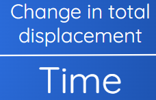
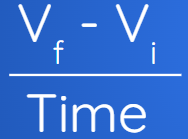

Velocity and Acceleration
Velocity is a vector, and like displacement, can be described in more than one dimension. A change in velocity occurs when there is a change in the velocity’s magnitude (speed) or direction, such as the race cars taking a curve in.
In general, average velocity is the change in total displacement over time. If displacement is in two dimensions, then you must first determine the total displacement using components (or a similar method) before determining the average velocity.

Acceleration depends on the change in velocity, so acceleration in two dimensions also depends on a change in the velocity’s magnitude, direction, or both.

Several Displacements Each with a Different Direction
The average velocity is based on the total displacement. Therefore, this average velocity will always have the same direction as the total displacement. To calculate total displacement, add the horizontal and vertical components of the individual displacements, and combine them to obtain the magnitude and direction of the total displacement.
Average speed, on the other hand, is a scalar property based on the length of time travelled and the total distance travelled, regardless of the direction. Average speed is simply the total distance divided by the time of travel and is greater than zero.
Subtracting Vectors in Two Dimensions
Vector subtraction is equivalent to adding a positive vector and a negative vector.
Acceleration in Two Dimensions
Average acceleration occurs when the velocity vector of an object changes in magnitude, direction, or both. As with two-dimensional displacement vectors, you can break down the two velocity vectors into horizontal and vertical components. By subtracting each dimension’s components, you obtain the net horizontal and vertical components:
𝚫Vx= Vfx- Vix
𝚫Vy= Vfy- Viy
From these, you can calculate the magnitude and direction of the net velocity using the Pythagorean theorem and the inverse tangent equation, respectively:

Examples
Calculating Average Velocity and Average Speed
A family drives from Saint John, New Brunswick, to Moncton. Assuming a straight highway, this part of the drive has a displacement of 135.7 km [E 32.18 N]. From Moncton, they drive to Amherst, Nova Scotia. The second displacement is 51.9 km [E 25.98 S]. The total drive takes 2.5 h to complete.
(a) Calculate the average velocity of the family’s vehicle.
(b) Calculate the average speed of the family’s vehicle.
Calculating Acceleration in Two Dimensions
A car turns from a road into a parking lot and into an available parking space. The car’s initial velocity is 4.0 m/s [E 45.08 N]. The car’s velocity just before the driver decreases speed is 4.0 m/s [E 10.08 N]. The turn takes 3.0 s. Calculate the average acceleration of the car during the turn.